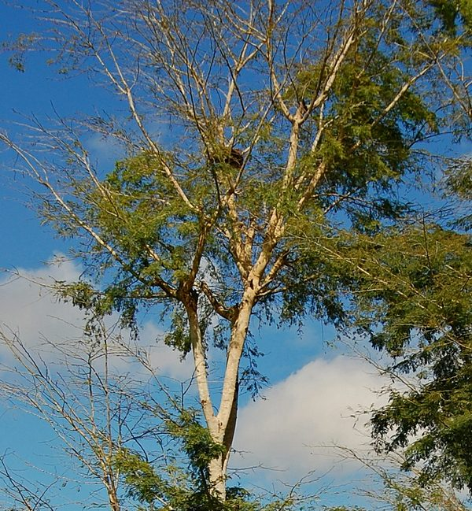

व्हाइट-बार्क एकेशियाWhite-bark Acacia
Vachellia leucophloea · Fabaceae · FLR-0410

- Scientific name वैज्ञानिक नाम
- Vachellia leucophloea (Roxb.) Maslin, Seigler & Ebinger
- Family कुल
- Fabaceae
- Hindi हिंदी
- व्हाइट-बार्क एकेशिया
- Local names स्थानीय नाम
- white-bark acacia, white bark acacia, reunjha
- Status here यहाँ की स्थिति
- native
- Movement आवागमन
- Resident, here all year
- Known from कहाँ दर्ज
- Others have published records from the wider Awadh–Purvanchal plain, none yet from Basti–Ayodhya अवध–पूर्वांचल से दूसरों के प्रकाशित अभिलेख, बस्ती–अयोध्या से अभी नहीं
- IUCN IUCN
- LC
- Review समीक्षा
- not yet reviewed
When to look कब देखें
Present all year. साल भर मौजूद।
Uses and possibilities उपयोग और संभावनाएँ
“Traditional medicine” means a documented traditional use, not a claim that it works. Nothing on this page is medical advice.
Drawn from the documented uses in the profile below, where each is labelled traditional, current or a research lead. All uses →
Tell it apart from इनसे अलग पहचानें
व्हाइट-बार्क एकेशिया / White-bark Acacia
Vachellia leucophloea (Roxb.) Maslin, Seigler & Ebinger — Fabaceae
व्हाइट-बार्क एकेशिया — जिसे स्थानीय भाषा में रोंझ या रेउंझा भी कहा जाता है, यह सूखे और खुले जंगलों, बीहड़ों और मेड़ों पर उगने वाला एक मध्यम आकार का कांटेदार पेड़ है। इसके तने की छाल सफेद या हल्के पीले रंग की होती है जो इसे दूर से ही अलग पहचान देती है। बरसात के बाद इसमें हल्के पीले रंग के गोल खुशबूदार फूलों के गुच्छे खिलते हैं।
Quick Identification त्वरित पहचान
| Feature | Description |
|---|---|
| Tree habit | Medium-sized thorny deciduous tree with a spreading, open crown |
| Bark | Characteristic smooth, pale yellowish-white or whitish-grey, exfoliating in strips |
| Spines | Paired, sharp, straight stipular thorns, dark brown turning pale with age |
| Leaves | Bipinnately compound with numerous pairs of tiny, crowded, linear leaflets |
| Inflorescence | Large terminal tomentose panicles of small globose heads |
| Flowers | Pale yellow to cream-white, fragrant, crowded in rounded heads |
| Fruit | Flat, linear, falcate or curved woody pods covered with fine grey tomentum |
Field tip: Look for the conspicuous pale, chalky whitish-yellow trunk and branches armed with straight paired thorns and spreading feathery foliage.
हिंदी: सफेद-पीली छाल, सीधे नुकीले कांटे और गोल पीले फूलों के बड़े गुच्छे देखकर इस पेड़ को पहचाना जा सकता है।
Morphology आकारिकी
Measurement not available in consulted sources.
A moderate-sized deciduous tree with a stout trunk, often crooked, supporting an irregularly spreading, open flat-topped crown. Bark exceptionally characteristic, smooth and pale yellowish-white or yellowish-grey when young, becoming rough, darker, and peeling off in papery strips or flakes on mature trunks, exuding a dark reddish gum upon injury.
Branchlets armed with sharp, stipular spines occurring in pairs at each node, straight or slightly curved, dark brown or polished black when young, fading to grey with age. Leaves alternate, bipinnately compound, feathery, rachis downy with small cup-shaped glands between each pair of pinnae; leaflets numerous, minute, linear-oblong, crowded, obtuse at the apex, subglabrous.
Flowers small, fragrant, pale yellow or cream-coloured, crowded in dense globose heads borne on short downy peduncles arranged in large, spreading, terminal tomentose panicles that often exceed the leaves. Calyx campanulate, teeth short and obtuse. Corolla tubular, about twice as long as the calyx, petals ovate-lanceolate. Stamens numerous, free, exserted, imparting a fuzzy, fluffy appearance to the heads.
Fruit a flat, linear, subfalcate or curved woody pod (legume), covered with dense, persistent greyish tomentum, indehiscent or dehiscing slowly. Seeds several per pod, compressed, obovate, smooth, dark brown.
हिंदी: पेड़ की छाल खड़िया जैसी सफेद-पीली होती है। पत्तियों में कई बारीक दानेदार पत्तियाँ होती हैं। गोल पीले फूलों के गुच्छे खिलते हैं और फलियां चपटी, मुड़ी हुई और रोयेंदार होती हैं।
Behaviour & Ecology व्यवहार और पारिस्थितिकी
A drought-hardy, light-demanding tree native to the drier regions of South and Southeast Asia. It is well adapted to hyper-arid conditions, eroded ravines, calciferous dry alluvium, and open thorn scrub across the Gangetic plain and Siwalik tracts. Its deep taproot system anchors it firmly against windstorms and taps deep subterranean moisture.
The tree fixes atmospheric nitrogen via root nodules, facilitating colonization of impoverished and eroded soils. The pale bark reflects harsh tropical sunlight, preventing excessive heating of the cambium during summer droughts. The fluffy yellow blossoms produce rich pollen and nectar, attracting diverse insect foragers during the post-monsoon period.
हिंदी: यह पेड़ सूखे और कड़ी धूप को बहुत आसानी से सहन कर लेता है। इसकी गहरी जड़ें जमीन से नमी खींचती हैं और मिट्टी को उपजाऊ बनाती हैं।
Life Cycle / Phenology जीवन चक्र
Leaves fall during the dry winter and hot spring months from January to April, with fresh feathery green foliage appearing in May and June shortly before the monsoon.
Flowering begins in August following heavy monsoon rains and extends through September, October, and November. Large clusters of creamy-yellow heads scent the air on sunny autumn mornings. Woody curved pods develop during the winter months and ripen from February to April. Pods persist on the branches for several months before falling or being torn open by grazing livestock and birds.
हिंदी: गर्मियों में पुरानी पत्तियाँ गिरती हैं और बरसात से ठीक पहले नई पत्तियाँ आती हैं। अगस्त से नवंबर के बीच फूल आते हैं और सर्दियों में फलियां पकती हैं।
Associated Species / Interactions सहजीवी प्रजातियाँ
The blossoms are actively foraged by honeybees, leafcutter bees, and various buprestid beetles.
In open woodland scrub, it associates naturally with thorn trees like babool (Acacia nilotica), khair (Senegalia catechu), and dhak (Butea monosperma). Birds such as parakeets and doves roost in its thorny, protective canopy.
हिंदी: कांटेदार डालियों में जंगली पक्षी सुरक्षित घोंसले और बसेरा बनाते हैं।
Pests and Diseases कीट और रोग
Mature trees are occasionally attacked by wood-boring cerambycid beetle larvae and bagworm moths. In waterlogged depressions, fungal root rot can damage young saplings, as the species cannot tolerate prolonged standing water.
हिंदी: कभी-कभी तने में छेद करने वाले कीड़े लगते हैं। अत्यधिक जलभराव वाले स्थानों में इसकी जड़ें सड़ सकती हैं।
Agricultural / Human Relevance कृषि प्रासंगिकता
Duthie (1903, 1: 315–316) records that the gum is used in native medicines, the leaves and bark in dyeing, and the fibre of the bark for ropes and fishing nets; that the young pods and seeds, and even the pounded bark mixed with flour, are eaten in times of scarcity; and that the wood is used chiefly for posts and fuel. This is a record of published traditional use, not medical advice.
हिंदी: डूथी (1903) के अनुसार इसका गोंद देसी दवाओं में, पत्तियाँ और छाल रंगाई में, और छाल का रेशा रस्सी और मछली के जाल बनाने में काम आता है; अकाल के समय इसकी कच्ची फलियाँ और बीज खाए जाते थे, और लकड़ी मुख्य रूप से खंभों और ईंधन में लगती है।
Expected Locally स्थानीय रूप से अपेक्षित
Not a field record. Written from published accounts for eastern Uttar Pradesh. No confirmed local sighting yet — if you have seen it, that is what the atlas needs.
अभी तक स्थानीय पुष्टि नहीं। यह विवरण प्रकाशित स्रोतों से है, किसी अवलोकन से नहीं।
Expected in dry scrub wastelands, ravine terraces along the Ghaghara and Kuwana drainage systems, and open grazing tracts across Basti, Ayodhya, and neighbouring districts. GBIF holds published records from the wider Awadh–Purvanchal plain, none yet from Basti–Ayodhya. The first verifiable record from the region will be a dated photograph of flowering plants or a population in a weed habitat or field border with district and coordinates.
हिंदी: बस्ती और अयोध्या में नदी के कछारों, बीहड़ों और सूखी खुली जमीनों में इसकी मौजूदगी की संभावना है।
Distribution वितरण
Global range: Native to South and Southeast Asia, including India, Pakistan, Nepal, Sri Lanka, Myanmar, Thailand, Vietnam, and Indonesia.
In India: Widespread across the drier plains of northern India, Rajasthan, Punjab, the Gangetic valley, and the Deccan plateau.
In Uttar Pradesh: Distributed across the dry deciduous belts, ravine lands, and Siwalik slopes throughout the state.
In Basti district / eastern UP: Expected on elevated sandy ridges, dry ravine slopes, and rural field boundaries.
हिंदी: यह पेड़ भारत, म्यांमार और दक्षिण-पूर्व एशिया के सूखे जंगलों में प्राकृतिक रूप से उगता है।
Research Questions शोध प्रश्न
- What is the comparative abundance of pollinating native solitary bees versus feral honeybees on its autumn flower panicles?
- How does the survival rate of this species during summer drought compare with
baboolunder identical soil conditions? - Which butterfly species utilize this tree as their primary larval host in eastern Uttar Pradesh? / पूर्वी उत्तर प्रदेश में कौन सी तितलियाँ इस पेड़ को अपना मुख्य पोषक पौधा बनाती हैं?
- What volume of nitrogen is added to the topsoil per year beneath mature canopies in dry scrub habitats? / सूखे मैदानों में इस पेड़ के नीचे की मिट्टी में सालाना कितना नाइट्रोजन जमा होता है?
- Can a child observe the distinctive chalky whitish-yellow bark and compare it to the dark cracked bark of a nearby babool?
हिंदी: क्या इस पेड़ की सफेद छाल इसे बबूल से अलग दिखाने के लिए पर्याप्त है और क्या तितलियाँ इस पर अंडे देती हैं?
Similar Species मिलती-जुलती प्रजातियाँ
| Species | How to tell apart | हिंदी | |
|---|---|---|---|
| `[[babool\ | Acacia nilotica]]` | Bark dark brown to black, deeply fissured; flowers bright golden-yellow; pods distinctly constricted between seeds | छाल काली और फटी हुई, फूल गहरे सुनहरे पीले और फलियां मोतियों जैसी जुड़ी होती हैं |
| `[[khair\ | Senegalia catechu]]` | Prickles hooked and recurved; flowers borne in cylindrical elongated spikes, not globose heads | कांटे मुड़े हुए हुक जैसे और फूल लंबी बेलनाकार बालियों में होते हैं |
Field rule: Look for the characteristic pale chalky yellowish-white bark, straight paired spines, and large branching panicles of globose creamy-yellow heads.
हिंदी: सफेद-पीली छाल, सीधे कांटे और गोल पीले फूलों के बड़े गुच्छे इसे बबूल और खैर से अलग करते हैं।
Taxonomy & Classification वर्गीकरण
Original description. First described as Mimosa leucophloea by William Roxburgh in 1800 in Plants of the Coast of Coromandel, volume 2, page 27. Transferred to Vachellia by Bruce Maslin, David Seigler, and John Ebinger in 2013 in Blumea, volume 58, issue 1, page 42.
Subspecies. Often treated in older Indian floras as Acacia leucophloea (Roxb.) Willd. (Duthie 1903; Hooker 1878; Brandis 1906). Monotypic in northern India.
Family and order placement. Belongs to family Fabaceae (subfamily Mimosoideae), order Fabales.
Phylogenetic notes. Segregated from the broadly defined polyphyletic genus Acacia into Vachellia based on molecular evidence and distinct stipular spine anatomy.
IUCN status rationale. Assessed as Least Concern (LC) on the IUCN Red List due to its extensive geographical distribution, large population sizes, and wide ecological tolerance.
हिंदी: यह मटर कुल (फैबेसी) का पौधा है। रॉक्सबर्ग ने 1800 में इसका मूल वर्णन किया था। आईयूसीएन ने इसे संकटमुक्त माना है।
Photo Gallery फोटो गैलरी
No photos yet — add field photos to media/species/white_bark_acacia/ and run node scripts/sync_photos.js.
Photos needed आवश्यक फोटो
- [ ] Pale yellowish-white trunk bark showing exfoliating strips (पेड़ की सफेद-पीली छाल)
- [ ] Feathery bipinnate leaves and sharp straight spines (पत्तियाँ और सीधे कांटे)
- [ ] Terminal panicle of fluffy globose flower heads (फूलों के गोल गुच्छे)
References संदर्भ
- Roxburgh, W. (1800). Plants of the Coast of Coromandel, vol. 2, p. 27.
- Duthie, J. F. (1903). Flora of the Upper Gangetic Plain and of the Adjacent Siwalik and Sub-Himalayan Tracts, vol. 1, part 1, pp. 315–316. (as Acacia leucophloea)
- Hooker, J. D. (1878). The Flora of British India, vol. 2, p. 294. (as Acacia leucophloea)
- Brandis, D. (1906). Indian Trees, Archibald Constable & Co., London, p. 262. (as Acacia leucophloea)
- IUCN (2019). Vachellia leucophloea: BGCI & IUCN SSC Global Tree Specialist Group. The IUCN Red List of Threatened Species, 2019. doi:10.2305/iucn.uk.2019-2.rlts.t146517555a146517557.en.
- GBIF Occurrence Data — Vachellia leucophloea, India (2025).
Source file: species/flora/trees/white_bark_acacia.md